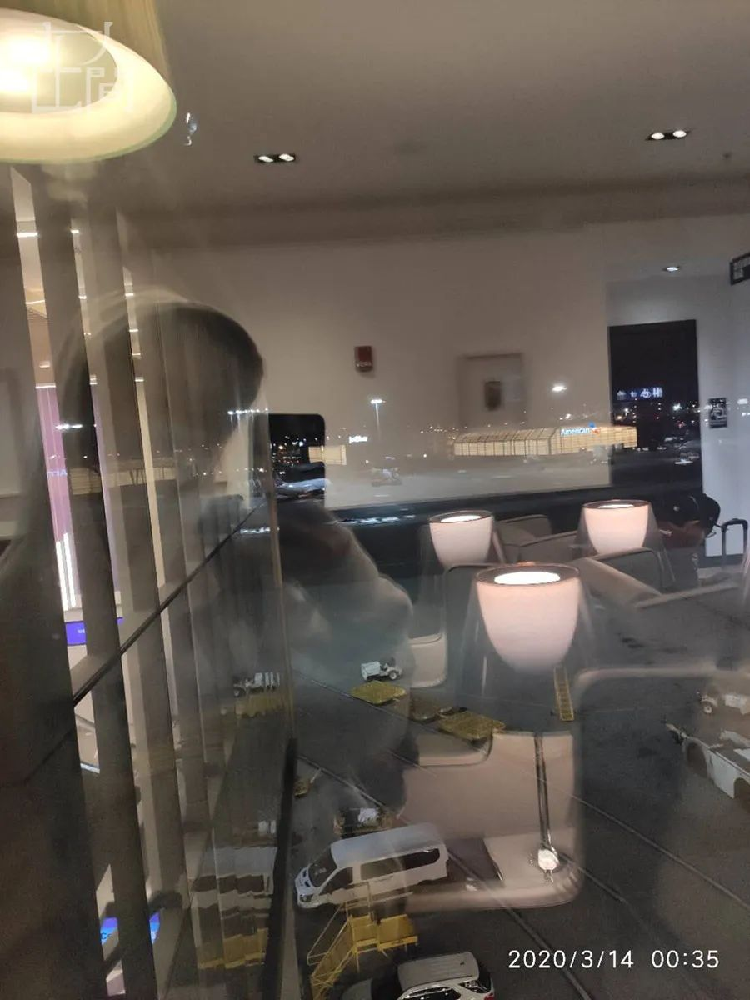
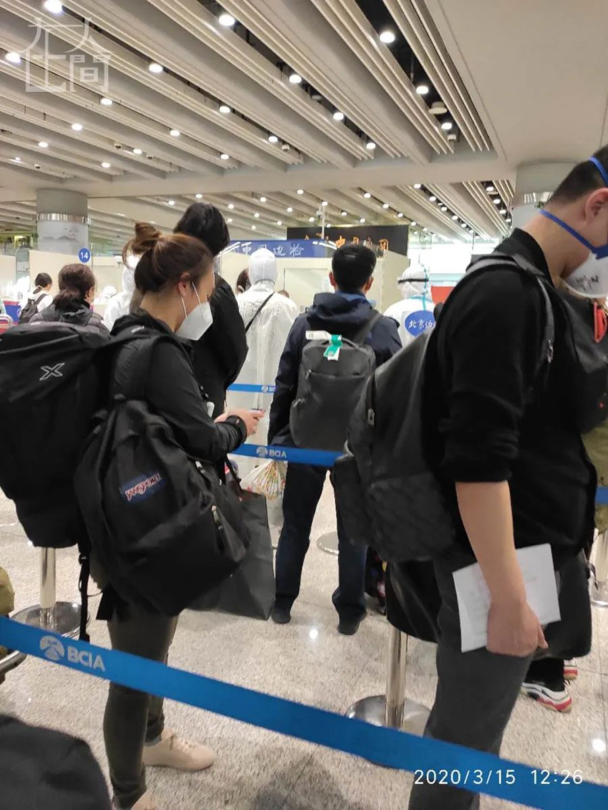
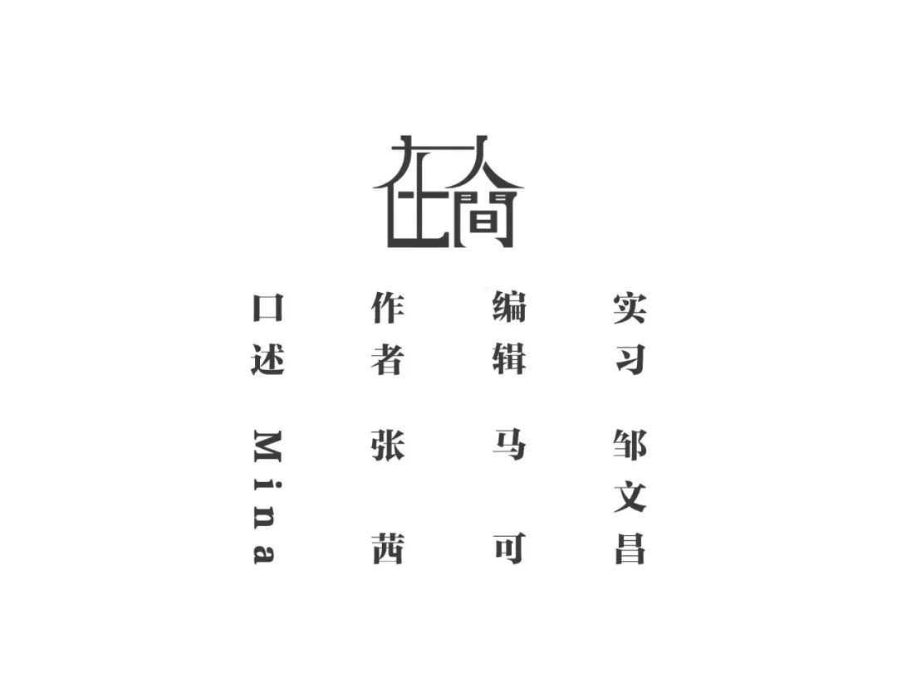

旅欧中国留学生的艰难回国路
原文链接 备份链接 疫情暴发之初，在欧洲的中国留学生普遍比较平静。随着疫情在欧洲迅速蔓延，留学生们就算“确有回国需求”，也很难立即回来，直航纷纷取消，转机充满变数，包机需要审批，既然暂时回不来，那就只能留下来继续抗疫 文 |《财经》记者 …


凤凰新闻客户端 凤凰网在人间工作室出品
打开凤凰新闻客户端，搜索「在人间」并关注
我是Mina，15 岁，今年刚去美国康涅狄格州沃特敦一所私立学校读九年级，也就是国内的高一。
北京时间3 月 15 日下午，经过21小时的飞行和落地检查后，我终于从波士顿回到了北京的家。
3 月 17 日，社区防疫人员来我家安装了一个电子装置，离开家这个装置就会向管理后台发送警报，主要是用来提醒我不出房门。
在家生活的感觉很安逸，每天的固定日程是戴口罩和量体温。我都是自己一个人吃饭，离所有人远远的。吃完了，自己清理一下。
我在家经常和姥姥聊天，一起弹钢琴。不过，我们的距离只要在 2 米之内，我都会戴口罩，也不会对着她说话，而是把头侧向一边。有时候，姥姥也戴口罩。
回到家里后，我开始倒时差，不太关心周围发生了什么，但和同学还保持着非常紧密的联系，包括我在美高和春令营的同学。我有一个同学经历复杂，比我晚 2 天离开美国。他从波士顿出发，先到印度，再飞青岛，行李被美联航弄丢了。还有一个同学，准备飞上海。在美国的时候，他们都跟我说“别走”，差点就听了他们的。

3 月 4 日，学校放了春假。当时情况有点复杂，美国已全面限制中国公民入境，又不建议学生回国，留学生面临回国或留美的两难处境。爸爸妈妈本来计划和我在韩国或日本见面。我们刚有这个打算，那边就爆出疫情来。之后，我们又决定在西班牙见面，结果西班牙、意大利也爆出来了，“就像病毒赶着我们走一样。”
放假后，我就不能住在宿舍里。我需要独自面对疫情中各种可能的情况，这对我们全家来说，都存在未知的风险。最后，父母决定送我去春令营。春令营在波士顿旁边一个叫沃尔本的城市。我们在那里寄宿，上一些课。我玩得挺好的，觉得没有必要回来。当时，我没觉得真有这么严重，况且我的免疫力挺强的。
我在春令营认识了很多朋友，老师也照顾我们。我们住在一家酒店，吃饭都是和酒店的客人隔离的，活动也都有固定区域，吃饭、上课的地方没有任何外人进去，还是比较安全的。老师也不会带我们出去吃饭，有些与世隔绝的感觉。
国内家长们筹集了 1500 个口罩寄过来，可惜被压在了海关。后来零零散散送来了几百个，但老师说社区的政策是如果没有生病不要戴口罩，而且我们是中国人容易被误解。所以，我们不出酒店，基本上也不戴口罩。
当时，除了新冠肺炎，同学之间基本没有别的话题。很多人都在跟进国内的进展，我们还写了一篇“回国还是留美”的文章发在学校的主页上。
3 月 10日后，我妈妈 72 小时没睡觉，开了两个手机给我抢票。她抢到了三张票，分别是 13 日、17 日和 19 日的。机票比平日贵了三四倍，单程就49000元。
回国的决定完全不是我做的，是我妈妈。她非常坚定，让我必须回来。春假开始后的每一天，对她来说都是一种煎熬。之前，我已经说服她乘坐 19 号的航班了，但她一直劝说我，12号又跟我说了一遍。
我是起飞前 12 小时才决定的，原本比较抗拒。
我的安排是先回国和家人待在一起，再等学校的通知，看美国那边能不能控制住疫情。之前收到学校的邮件，4 月 13 日之前都上网课。到目前为止，我们大多数人都不太乐观，包括春令营的老师、学生，还有高中的同学、朋友。我妈妈宁愿我回国后回不去，也好过待在美国。


■ 候机时，波士顿洛根机场的午夜（图上为北京时间）。
妈妈托朋友开车送我去了机场。3 月 13 日凌晨1 点 25 分（当地时间），我从波士顿洛根机场起飞。机场的人很少，飞的人大部分是留学生，工作人员有些没戴口罩。我真的非常纠结，害怕在人口密集的地方感染病毒。
从波士顿飞香港的时候，所有状况都在意料之中，虽然和平常飞的时候有些不一样，但也不过是机场的工作人员更谨慎。飞机上人挨着人。我登机后，把座椅整个擦了一遍。
很多乘客都全副武装，不少人穿着防护服，戴着口罩、眼镜和手套。坐我右边的一个人，带着窗帘上飞机，把自己和外界隔离开来。当然，还有一些美国人，连口罩都没有戴。我的防护级别算是中等的，和大多数人一样，戴了口罩和手套，还带了大量的酒精和湿纸巾。
我这个人心比较大，在飞机上不觉得忐忑，特别是在波士顿飞香港的航班上。上飞机该干嘛干嘛，我只知道不能摘口罩。我尽量不跟任何人说话，就闭眼或睡觉。但我忍不住喝了很多水，还吃了自己从酒店打包的东西。
飞机从香港到了北京，这个时候我才感到害怕。毕竟，首都机场人流量那么大，而且有输入性新冠肺炎案例，很多病例是从别的地方飞来的。
3 月 15 日上午 10 点 40 分左右（北京时间），飞机抵达首都机场后，播放了一段很长的广播。广播里念着一些人的名字，让他们下飞机测体温。我在飞机上特别难熬，坐了起码有一个半小时。我根本不知道他们在干什么，因为没有人讲解。乘客走过来的时候，我很担心，“他们来的地方到底和我一不一样啊？”我也不知道他们是不是在潜伏期，还是已经患病了。
在飞机上，温度调得比较高。我浑身很热，心想“万一真的发烧了怎么办？”一下飞机，他们马上量体温。我想“完了，估计要隔离”。工作人员看我的体温看了很长时间，还跟旁边的人说了些什么。我吓得心脏差点就停了，大概是我最紧张的时候吧。结果他们说“没事儿，你继续走”。

■ 抵达首都机场，过廊桥时等待检测。
整个首都机场的布局变了，到处是围起来的水马和塑料布；流程也不一样了，就算之前飞过，也是一头雾水，只能跟着队伍朝前走，或者向工作人员打听。差不多有 30 个工作人员在那儿等着。他们穿着防护服，戴着防护镜和口罩。看着他们那架势，我觉得自己的装备实在太差了。
我其实没睡多久，十多个小时的飞机，我整个人很晕，迷迷糊糊的。现场又乱又吵，不是一个人在说事，是所有人都在问问题。我完全反应不过来，下一步到底去哪儿，我也不知道。
下飞机后，有一个之前认识的朋友，现在是哈佛的大一新生，看我穿着Taft的卫衣，便主动跟我打招呼。我们是一个航班，从波士顿飞回来的。我们于是一起走了一段路。
飞机落地后，我妈妈全程都在给我发短信，她很着急。有些时候她给我打电话，但我在检查，只能发信息说“现在不能给你回电话，对不起”。我戴着手套本来可以滑手机，但是很麻烦，不够灵敏。在机场，我干得最频繁的事是拿消毒液洗手和擦手，差不多每隔 2 分钟就洗一次。
过边检前，有一个填写信息登记卡的过程。中国居民填白色的，外国人填别的，然后一对一审核。根据填写的信息，工作人员会问你到京后的居住地、家属情况、家里是否有老人或小孩等问题。过海关时，我认识了不少人。我发现回国最多的人口，要不就是驻美的老人，要不就是美高和美本的孩子。我看到很多学生穿着学校的衣服或戴着学校的帽子，我基本上知道他们是哪个学校的人。
从下飞机到过海关，我已经检测了 3 次体温。在机场，到哪儿都得排队。排队时我害怕什么呢？相互之间离着最多半米的距离，但是防护的距离不是 1.5 米吗？我担心前面或后面的人有这个病毒怎么办。

■ 等待边检。
过海关时，海关人员问了些问题，比如你之前去过哪里、家里有多少人口、从哪里来、在香港怎么转机的、在波士顿住哪里……大概两三分钟，就让我过去了。哈佛的朋友是美国护照，他花了可能有 10 分钟。我没等他，直接去拿行李，因为我知道待得越久，和后面的人接触就越多。
我们一出海关又是一个很长的队伍，我都不知道通向哪里。我问前面的人“你们排什么”，他说“排队拿行李”。这个队伍排了大概 30 分钟。排着排着，有个工作人员走到身边，“KA900 的人往前走，KA900 的往前走！”这是我乘坐的从香港飞北京的港龙航班号。我赶快窜到前面，下了一个电梯，就到了坐大巴的登机口。行李被一条条码放在地上，墙上贴着用A4 纸手写的航班号。找行李的人非常多，大家挤在一个地方，避免不了触碰，或摸别人摸过的东西。我的心跳得很快，找到行李后赶紧上了大巴。
上大巴我也是迷迷糊糊的，不知道去哪儿。我问一个工作人员，他说“我们拉你去新国展”。我说“要通知家属来接吗”，他说“你到那儿再问吧”。我注意到，我们乘坐的大巴也不是机场的巴士，是租借的旅游公司的大巴，靠背的枕套印着“承接大型客车旅游团体会议”等字句。
车上一个人占两个座，中间隔开；特别吵，有人在骂脏话，有人抱怨着“到底带我们去哪儿”、“是不是不让我们回家”什么的。
我妈妈向之前回北京的人了解过情况，所以我比较淡定。
我前面坐的一位男士，紧张兮兮的，我跟他说“没关系，我们去新国展，一个更大型更细致的检疫站，他们问一些问题应该就可以走了。”他说“好吧，谢谢你。”之后，他就比较安定了。
大约过了 20 分钟，我们到了新国展。

■ 新国展分区。
新国展人挺少的，地方非常大。我们又开始排队，隔 5 分钟量一次体温。所有工作人员穿着防护服，背面写着自己的中文名。进去之后，工作人员问我“哪儿的”，我说“XX区”，他说“你跟我来这边”。每个进去的人都由一个工作人员带着，保证里面没有人乱走。

■ 新国展，我所在小区的信息登记台。
走到我所在区的桌子边，看到有 5 个工作人员在此等候。这里相当于是一个信息登记台，有的人在咨询，有的人在做登记。准备还是挺周到，提供洗手液、消毒纸巾，可以消毒桌上的笔。属于我们区的人很少，只有 5 个。信息表上，我又填了一次“姓名、年龄、联系方式、家庭住址、出国地址、回国原因、回国事由、家庭情况……”。他们还让我用微信扫了二维码，在上面填写一个电子信息。如果我们坐的航班检疫出来有人患病，可以及时联系到我。
我完全不知道要干什么，就坐在那儿等着。一个身材高大的男性工作人员，搜集了在场 5 个人的住址信息。问完后打了一通电话，然后转头对我们说“你们等着，一会儿接你们的人就来”。我妈妈当时打算来接我，我就问了句“要通知家属来接吗”，对方说“千万别，千万别”。我刚认识的另一个朋友，他爸爸已经在新国展的停车场等着了，但工作人员说他爸爸不能来，让他回去。
等的时候没事干，我就跟做检疫的大哥聊天。他说之后回来的人要到酒店集中隔离，“你们应该是我们接触的最后一波人”。他已经在这儿值了 4 天班。
等了半个小时左右，他们带我们往外走。出了门，全都是围栏和塑料布，还有立起来的水马。到了停车场，一溜的车。我们上了一辆大巴，每一个座位都蒙了一层薄薄的塑料布，乘客和驾驶舱中间也隔着一块塑料帘子。工作人员在塑料布前面，我们在后面。因为只有 5 个人，车子很空，所以他们让我们隔着三排座椅坐，窗户也开着。5 个人中，有一个南非来的、两个波士顿来的，还有一个香港来的。我们一直在聊天，讨论美国大学和高中放假的时间和安排。
我是第一个下车的。我家离新国展只有 1 公里，就在马路对面，走路10 分钟就到了。司机不认路，绕了好几个弯，才把我送到家门口。
到了小区门口，工作人员示意我留在车上，先别站起来。他下了车，和社区负责隔离工作的人做了交接——是不是住这个小区，是不是业主等。然后他们通知了家属。
一些工作人员拿着喷枪在消毒，有一个人帮我做了登记。他们也全部戴着口罩。我爸在大门口等我。我刚下车，他就上来给我喷酒精，全身上下和行李箱都喷了。社区负责人叮嘱了很多句，说尽量不要跟别人一个屋住，在家也要戴口罩，每天量体温然后上报等。
下午 3 点 50 分，我终于踏进了家门。我妈让我把全身的衣服脱下，然后我就上楼洗澡了。我们之间不能拥抱也不能握手。
全程走下来，我其实没有太畏惧。对我来说，这是一个难得的长见识的机会。
我也很感动，不管是在哪个社交媒体上，稍微发一句“我要走了”或者“你们多保重，我要上飞机了”，就有好多人留言支持，分享他们听到看到的新闻，还嘱咐“飞机上不能吃也不能喝”什么的，不熟悉的人也留言说“记得戴口罩”。这个病毒让我们变得更团结。就连那些心理年龄只有 3 岁的朋友，突然之间也变成熟了，会担心我的安全。
现在，所有美高的留学生都非常留意美国那边的消息，有一个叫 Founders league的联盟，差不多美国东岸排名前20 的高中都在这个联盟里。联盟的最新消息是取消春季运动的所有安排，包括我们学校也是。如果取消了运动，那会不会取消上课呢？Choate高中取消了所有的上课安排，春季学期就这么结束了。会不会我们学校也像它一样，等到2020 年 9 月才开学？
我所认识的留学生都想回家，家是我们的避风港。
更多疫情故事，请点击左下角「阅读原文」。



新型肺炎疫情牵动人心，
《在人间》现面向全国网友征稿：
（一） 疫区影像日记
如果你身处疫区
请你用照片（视频）和文字记录
你所听闻和见到的一切
照片不少于3张
文字不少于300字
投稿方式：微信联系人间君（zairenjianliving）
（二）抗击疫情真实故事
无论你是一线医护人员、志愿者、
确诊或疑似患者及家属、已治愈出院人士等等，
如果希望讲述疫情相关经历，
请微信联系人间君（zairenjianliving）

原文链接 备份链接 疫情暴发之初，在欧洲的中国留学生普遍比较平静。随着疫情在欧洲迅速蔓延，留学生们就算“确有回国需求”，也很难立即回来，直航纷纷取消，转机充满变数，包机需要审批，既然暂时回不来，那就只能留下来继续抗疫 文 |《财经》记者 …
原文链接 备份链接 中午时分伦敦Tesco超市的牙膏架 拍摄：高山清 记者：田思奇 王磬 编辑：曾宇 “ 直到登机，一些被迫回国的同学仍在犹豫是走是留。落地后的检疫和隔离安排很细致，不少同学表示不想连累家人，即便没有强制政策，也会申请集中 …
原文链接 备份链接 这次疫情，也让我对祖国有了更深刻的认同，突发事件面前，我们国家的组织调配能力是一流的。 记者 | 沈 林 受访人 | 胡晓琳 最近很多在海外的同胞们都在纠结一个问题：非常时期，到底应不应该回国？或许我的经验可以给他们 …
原文链接 备份链接 《小酒馆》，是燃财经旗下的故事栏目，真人真事，讲述创新经济时代的人生百态。本文为第35期。 作者 | 金玙璠 孟亚娜 陈琪 编辑 | 魏佳 “新冠疫情，中国打上半场，世界打下半场，华人留学生打全场”。这虽然是一句调侃， …
原文链接 备份链接 去年9月刚入学伦敦大学学院(ucl)的大一学生黄嘉琪（化名）没有想到，自己成年后遇到最大的困难是新冠肺炎。 今年1月初，黄嘉琪从伦敦飞回国，准备度过入学以来的第一个圣诞假期，为了1月下旬准时入学，她提前买好了回伦敦的机 …